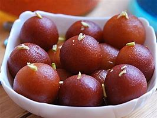
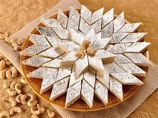
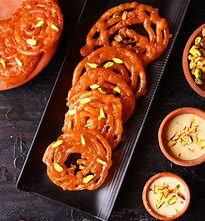

GulabJamun
Ingredients:
- 1 cup milk powder
- 1/4 cup all-purpose flour &1/4 tsp baking powder
- 1 tbsp ghee (clarified butter)
- 3-4 tbsp milk &oil or ghee for frying
- 1.5 cups sugar &2 cups water
- 1/2 tsp cardamom powder
- 1 tsp rose water
Recipe:
- In a mixing bowl, add milk powder, all-purpose flour, and baking powder. Mix well.
- Add ghee and mix until the mixture resembles bread crumbs.
- Add milk little by little and knead the mixture into a soft dough.
- Cover the dough and let it rest for 10 minutes.
- In a wide pot, add sugar and water. Heat on a medium flame until the sugar dissolves. Then, let the syrup boil until it reaches a sticky consistency. Add cardamom powder and rose water. Mix well and turn off the heat.
- Divide the dough into small balls and roll them into smooth balls
- Heat oil or ghee in a pan. Once the oil is hot, reduce the flame to low and add the balls. Fry them on low flame until they turn golden brown.
- Remove the fried balls and add them to the sugar syrup. Let them soak for at least 30 minutes before serving.

Barfi
Ingredients:
- Milk powder
- Ghee
- Milk
- Sugar
- Cardamom
Recipe:
- Heat ghee in a nonstick pan. Add whole milk and bring this to a boil on low flame.
- Keep stirring it to prevent it from burning at the bottom.
- Once the milk starts bubbling, add milk powder in increments and keep whisking it so there are no lumps.
- Continue stirring until the mixture thickens or forms like mass, and ghee starts leaving the sides of the pan.
- Stop cooking once the mixture thickens or forms like mass, and ghee starts leaving the sides of the pan.
- Pour the mixture into a greased tray and let it cool down.
- Cut the barfi into desired shapes and sizes.Garnish with nuts or edible silver

Besan Ladoo
Ingredients:
- 2 cups of besan (gram flour)
- 1/2 cup of ghee (clarified butter)
- 1 cup of sugar
- 2/3 teaspoon of green cardamom powder
- 4 tablespoons of chopped cashews (optional)
Recipe:
- Heat a pan on low flame and add the besan. Roast the besan until it turns aromatic and golden in color.
- Add the ghee and mix well. Continue to roast the mixture on low flame until the ghee starts to separate from the mixture.
- Turn off the flame and let the mixture cool down for a few minutes.
- Add the sugar and cardamom powder to the mixture and mix well.
- Add the chopped cashews and mix well.
- Take a small portion of the mixture and shape it into a ball. Repeat this process until all the mixture is used up.
- Store the besan ladoos in an airtight container.

Jalebi
Ingredients:
- 3 cups all-purpose flour and 1/2 cup corn flour
- 2 cups hung curd
- 1 1/2 pinch baking soda
- 1/2 cup ghee and 2 cups sunflower oil
- 3 cups sugar and 3 cups water
- 5 strands saffron
- 4 drops rose essence
- 1/2 teaspoon green cardamom powder
- 1/2 teaspoon edible food color
Recipe:
- In a mixing bowl, combine the all-purpose flour, corn flour, hung curd, and baking soda. Mix well.
- Add water to the mixture and whisk until smooth.
- Cover the bowl and let the mixture ferment for 10-12 hours.
- In a separate pan, heat the ghee and oil together.
- Pour the batter into a piping bag and pipe the batter into the hot oil in a spiral shape.
- Fry the jalebis until they turn golden brown.
- In a separate pan, combine the sugar, water, saffron, rose essence, and green cardamom powder. Cook until the sugar dissolves and the syrup thickens.
- Dip the fried jalebis in the sugar syrup for 2-3 minutes.
- Serve hot and enjoy!
